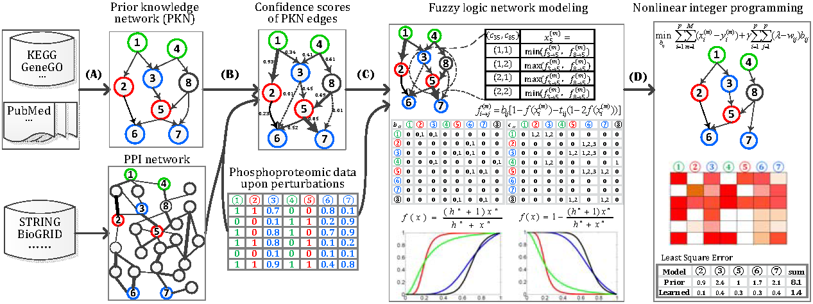

Authors: Hui Liu, Shital Kumar Mishra, Fan Zhang, Shuigeng Zhou, and Jie Zheng
Aberrant signaling transduction has been shown to be a key cause of tumor, and thus modeling of signaling pathways is crucial for our understanding of carcinogenesis and predicting of cellular responses to drug treatments. However, canonical signaling pathways manually curated from literatures are not cellular context-specific, and often do not the biological responses to drug treatment. While purely data-driven methods suffered from the difficulty to scale up to large-size networks, and limited interpretability. Some hybrid methods have been recently proposed to integrate prior knowledge and data-driven inference for signaling pathway modeling. However, most hybrid methods either restricted the search space to the prior knowledge network and probably miss some real edges, as prior knowledge is often incomplete and biased to known pathways, or gave non-differential confidence levels to all prior knowledge edges.
Contacts:
- Jie Zheng, PhD
- School of Computer Engineering, Nanyang Technological University, Singapore.
- >>Homepage
Highlights:
We propose a new hybrid method, knowledge-guided fuzzy logic network model, to integrate the prior knowledge and data-driven learning for signaling pathway inference. In particular, we introduce a regularizer encoding the penalty against both model complexity and structural divergence between prior and learned networks, into the formulation of the least square error between experimental observations and predictions. Theoretically, our model can search the whole network space by explicitly encoding the logical relationships among multiple input signals. It also allows us to use conditional independences to narrow down the search space in order to reduce computational overhead. Moreover, we calculated differential confidence levels for the prior knowledge edges based on weighted protein-protein networks. The proposed model was further transferred to a constrained nonlinear integer programming problem that can be efficiently solved by genetic algorithm.

Fig.1 Flowchart of the knowledge-guided fuzzy logic network modeling of inference of signaling pathway
We evaluated our model on a synthetic dataset and three real phosphoproteomic datasets, The experimental results demonstrated that our method can not only effectively uncover both the topological structure and logic gates. Moreover, it can infer the signaling pathway alterations that are supported by real data although not included in prior knowledge network.